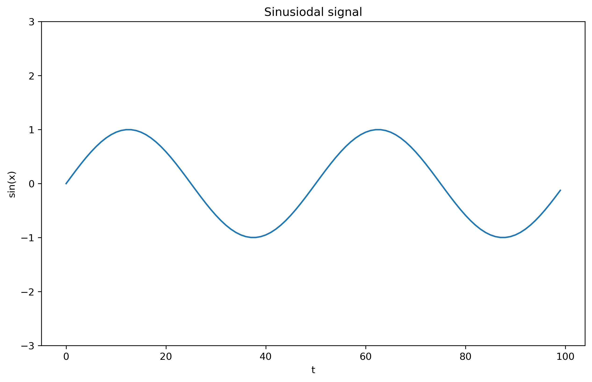
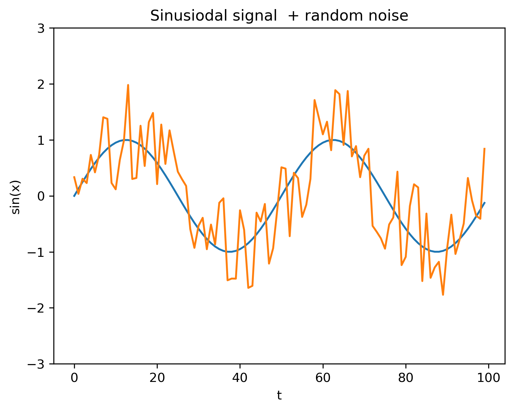
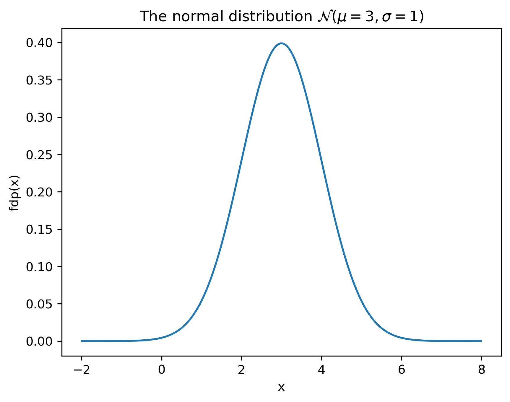
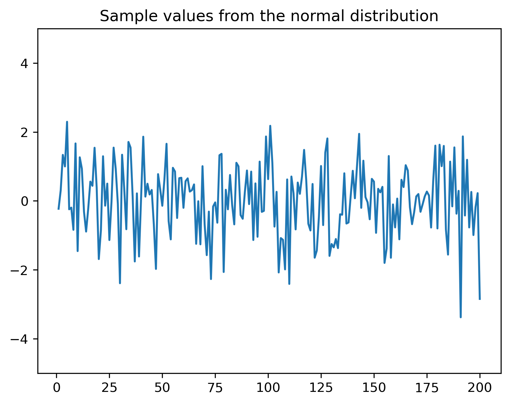
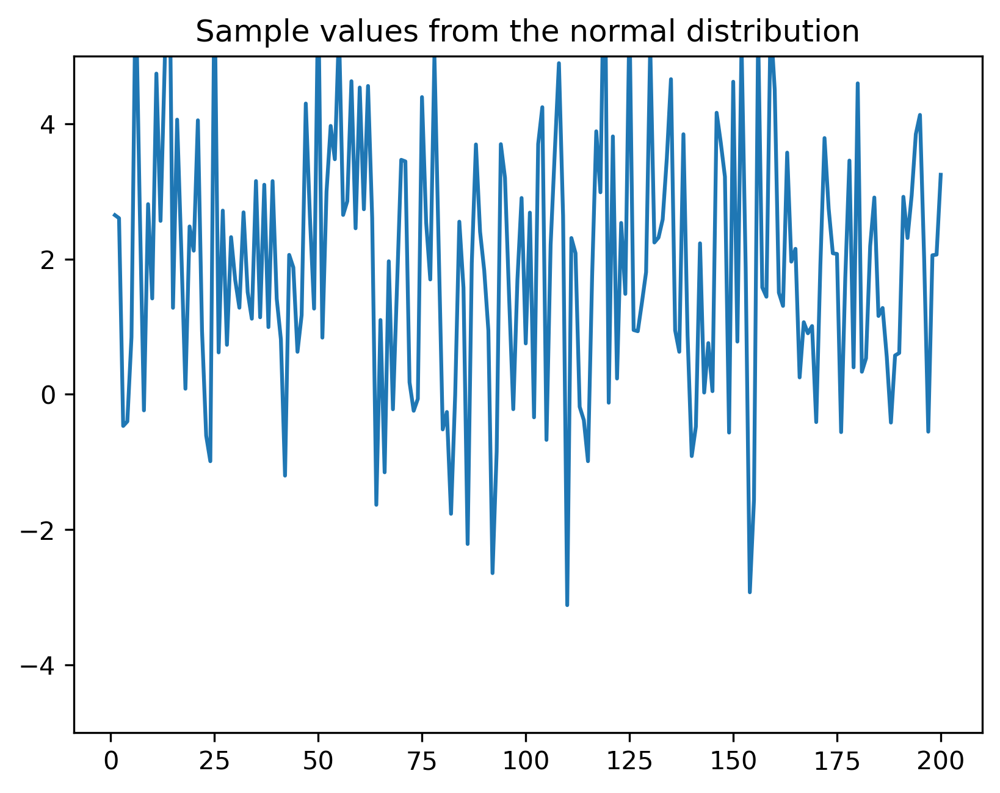
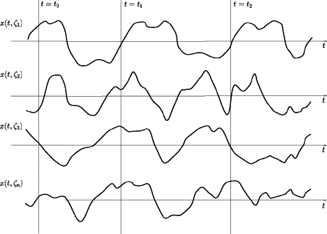
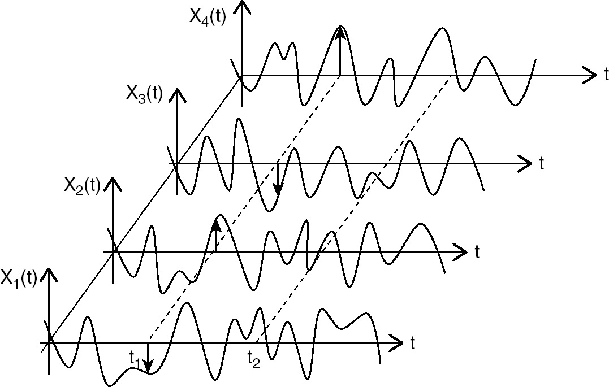

Semnale aleatoare
Variabile aleatoare
O variabilă aleatoare (v.a.) este o variabilă care denumește o valoare produsă printr-un fenomen aleator. Practic, reprezintă un nume \(X\), \(Y\) etc. atașat unei valori arbitrare.
O realizare a unei variabile aleatoare este o valoare particulară posibilă pe care o poate lua respectiva variabilă.
Spațiul realizărilor \(\Omega\) este mulțimea tuturor realizărilor (mulțimea tuturor valorilor posibile ale unei variabile aleatoare).
Exemple:
Fie \(X\) = numărul obținut prin aruncarea unui zar. Spațiul realizărilor este \[\Omega = \left\{1, 2, 3, 4, 5, 6\right\}\]
Fie \(V_{in}\) = voltajul măsurat al unei baterii. Spațiul realizărilor este \[\Omega = [1, 1.7] V\]
Fie \(X\) = rezultatul obținut la aruncarea unei monede, notat cu 0 sau 1.
(sursa imaginii: https://www.mathsisfun.com/data/random-variables.html)
Variabilele aleatoare modelează semnale afectate de zgomot, cum ar fi un semnal de tensiune într-un circuit electric (zgomot termic etc), sau imagini afectate de zgomot
Exemple de semnale afectate de zgomot
- Semnal sinusoidal
import matplotlib.pyplot as plt, numpy as np, math;
x = np.linspace(0, 99, 100);
s = np.sin(2*math.pi*0.02*x)
plt.figure(figsize=(10,6));
plt.plot(x,s);
plt.ylim(-3,3)
plt.xlabel('t');
plt.ylabel('sin(x)');
plt.title('Sinusiodal signal');
plt.savefig('fig/01_RandomSignals_Sine.png', transparent=True, bbox_inches='tight', dpi=300)
plt.close()
- Semnal sinusoidal + zgomot (distribuție normală, \(\mu = 0, \sigma^2 = 1\))
import matplotlib.pyplot as plt, numpy as np, math;
x = np.linspace(0, 99, 100);
s = np.sin(2*math.pi*0.02*x)
sn = s + np.random.randn(100)
plt.plot(x,s, x, sn);
plt.ylim(-3,3)
plt.xlabel('t');
plt.ylabel('sin(x)');
plt.title('Sinusiodal signal + random noise');
plt.savefig('fig/01_RandomSignals_SinePlusRandn.png', transparent=True, bbox_inches='tight', dpi=300)
plt.close()
Semnal sinusoidal + zgomot + zgomot (distribuție uniformă \(\mathcal{U} [-1,1]\))
Ce diferă? Tipul distribuției
import matplotlib.pyplot as plt, numpy as np, math;
x = np.linspace(0, 99, 100);
s = np.sin(2*math.pi*0.02*x)
sn = s + np.random.uniform(-1,1,100)
plt.plot(x,s,x,sn);
plt.ylim(-3,3)
plt.xlabel('t');
plt.ylabel('sin(x)');
plt.title('Sinusiodal signal + random noise');
plt.savefig('fig/01_RandomSignals_SinePlusRand.png', transparent=True, bbox_inches='tight', dpi=300)
plt.close()
- Imagine originală
import matplotlib.pyplot as plt, numpy as np, math, PIL;
from PIL import Image
myImage = Image.open("img/TestImageGirl.gif").convert("L");
im = np.array(myImage)
plt.imshow(im, cmap='gray', vmin=0, vmax=255)
plt.savefig('fig/01_RandomSignals_ImageClean.png', transparent=True, bbox_inches='tight', dpi=300)
plt.close()
- Imagine + zgomot (normal, \(\mu = 0, \sigma^2 = 1\))
import matplotlib.pyplot as plt, numpy as np, math, PIL;
from PIL import Image
myImage = Image.open("img/TestImageGirl.gif").convert("L");
im = np.array(myImage)
sigma = math.sqrt(225);
imn = im + sigma*np.random.randn(im.shape[0], im.shape[1])
plt.imshow(imn, cmap='gray', vmin=0, vmax=255)
plt.savefig('fig/01_RandomSignals_ImageRandn1.png', transparent=True, bbox_inches='tight', dpi=300)
plt.close()
- Imagine + zgomot mai mare (normal, \(\mu = 0, \sigma^2 = 10\))
import matplotlib.pyplot as plt, numpy as np, math, PIL;
from PIL import Image
myImage = Image.open("img/TestImageGirl.gif").convert("L");
im = np.array(myImage)
sigma = math.sqrt(1500);
imn = im + sigma*np.random.randn(im.shape[0], im.shape[1])
plt.imshow(imn, cmap='gray', vmin=0, vmax=255)
plt.savefig('fig/01_RandomSignals_ImageRandn2.png', transparent=True, bbox_inches='tight', dpi=300)
plt.close()
- Imagine + zgomot (uniform, \(\mathcal{U} [-5, 5]\))
import matplotlib.pyplot as plt, numpy as np, math, PIL;
from PIL import Image
myImage = Image.open("img/TestImageGirl.gif").convert("L");
im = np.array(myImage)
imn = im + sigma*np.random.uniform(-5, 5, im.shape)
plt.imshow(imn, cmap='gray', vmin=0, vmax=255)
plt.savefig('fig/01_RandomSignals_ImageRandUnif.png', transparent=True, bbox_inches='tight', dpi=300)
plt.close()
Variabile aleatoare discrete și continue
O variabilă aleatoare este discretă dacă \(\Omega\) este o mulțime discretă, sau continuă dacă \(\Omega\) este o mulțime compactă.
Numărul \(X\) obținut prin aruncarea unui zar este o v.a. discretă. Valoarea măsurată a tensiunii este o v.a. continuă.
Probabilitate și densitate de probabilitate
Pentru variabile aleatoare discrete
Variabilele aleatoare discrete sunt caracterizate prin două funcții: funcția masă de probabilitate (discretă) și funcția de repartiție (care e “în trepte”).
Fie o v.a. discretă \(A\).
Se definește funcția masă de probabilitate (FMP) (“probability mass function”, lb.eng.) \(w_A(x)\) ca fiind probabilitatea ca \(A\) să aibă valoarea egală cu \(x\): \[w_A(x)= P \left\{A = x \right\}\]
Exemplu: funcția masă de probabilitate pentru valoarile unui zar este următoarea:
FMP mai e numită, în limbaj uzual, “distribuția” variabilei aleatoare.
FMP se poate utiliza pentru a calcula probabilitatea unor valori:
Probabilitatea ca \(A\) să aibă valoarea \(v\): \[P\left\{ A = v\right\} = w_A(v)\]
Probabilitatea ca A să fie între valorile \(a\) și \(b\) (inclusiv): \[P\left\{ a \leq A \leq b\right\} = \sum_{x=a}^b w_A(x)\]
Funcția de repartiție (FR) \(F_A(x)\) a unei variabile aleatoare \(A\) reprezintă probabilitatea ca \(A\) să aibă valoarea mai mică sau egală cu \(x\): \[F_A(x) = P\left\{ A \leq x \right\}\]
Exemplu: funcția de repartiție a valorilor unui zar este următoarea:
Pentru v.a. discrete, FR este întotdeauna “în trepte”.
Și funcția de repartiție poate fi folosită pentru a calcula diverse probabiități:
Probabilitatea ca \(A\) să aibă valoarea \(v\): \[P\left\{ A = v\right\} = F_A(v) - F_A(v-1)\]
Probabilitatea ca A să fie între valorile \(a\) și \(b\) (inclusiv): \[P\left\{ a \leq A \leq b\right\} = P\left\{ A \leq b\right\} - P\left\{ A \leq a\right\} = F_A(b) - F_A(a-1)\]
Între funcția masă de probabilitate și funcția de repartiție există următoarea legătură. FR este suma cumulativă (un fel de “integrală discretă”) a FMP: \[F_A(x) = \sum_{t = -\infty}^{t = x} w_A(t)\]
Exemplu pentru zar: grafic, la tablă
Pentru variabile aleatoare continue
Variabilele aleatoare continue sunt caracterizate prin două funcții: funcția densitate de probabilitate și funcția de repartiție.
Fie o variabilă aleatoare continuă \(A\).
Funcția densitate de probabilitate (FDP) \(w_A(x)\) se definește ca probabilitatea ca valoarea lui \(A\) să fie într-o vecinătate \(\epsilon\) mică în jurul lui \(x\), împărțit la \(\epsilon\) \[w_A(x) = \lim_{\epsilon \to 0}{\frac{P(A \in [x, x+\epsilon])}{\epsilon}}\]
În limbaj informal, se mai numește și distribuția variabilei A.
Funcția de repartiție (FR) \(F_A(x)\) se definește la fel ca la variabile discrete, adică reprezintă probabilitatea ca \(A\) să aibă valoarea mai mică sau egală cu \(x\): \[F_A(x) = P\left\{ A \leq x \right\}\]
Între cele două funcții există următoarea legătură. Funcția de repartiție este integrala densității de probabilitate, sau, altfel spus, densitatea de probabilitate este derivata funcției de repartiție: \[F_A(x) = \int_{-\infty}^x w_A(u) \mathrm{d}u\]
\[\begin{split} w_A(x) &= \lim_{\epsilon \to 0}{\frac{P(A \in [x, x+\epsilon])}{\epsilon}} \\ &= \lim_{\epsilon \to 0}{\frac{P(A \leq x+\epsilon) - P(A \leq x)}{\epsilon}} \\ &= \lim_{\epsilon \to 0}{\frac{F_A(x+\epsilon) - F_A(x)}{\epsilon}} \\ &= \frac{\mathrm{d}F_A(x)}{\mathrm{d}x} = F'_A(x) \end{split}\]
Ca în fizică: \[\rho(x) = \frac{dM}{dV}\] densitatea unui punct = masa unei mic volum V în jurul acelui punct împărțit la volumul V, pentru \(V \to 0\).
Densitatea de probabilitate se poate folosi pentru a calcula probabilități, dar numai prin integrare:
Probabilitatea ca A să fie între valorile \(a\) și \(b\) = integrala FDP între \(a\) și \(b\): \[P\left\{ a \leq A \leq b\right\} = \int_a^b w_A(x) dx\]

(sursa: “https://intellipaat.com/blog/tutorial/statistics-and-probability-tutorial/probability-distributions-of-continuous-variables/*)
Probabilitatea ca \(A\) să aibă exact valoarea \(v\) este întotdeauna 0 \[P\left\{ A = v\right\} = \int_v^v w_A(x) dx = 0\]
(în interpretarea grafică, aria de sub un punct este nulă)
Funcția de repartiție se poate folosi de asemenea pentru calculul unor probabilități, în mod direct, la fel ca la variabile discrete:
Probabilitatea ca valoarea lui A să fie între \(a\) și \(b\): \[P\left\{ a \leq A \leq b\right\} = F_A(b) - F_A(a)\]
Nu contează dacă se consideră un interval deschis sau închis: \[P\left\{ a \leq A \leq b\right\} = P\left\{ a < A < b\right\}\]
Interpretarea densității de probabilitate
O variabilă aleatoare continuă poate lua o infinitate de valori posibile.
Așadar, probabilitatea ca o variabilă aleatoare continuă \(A\) să ia exact o anume valoare precisă \(x\), dintr-o infinitate de alternative, este întotdeauna zero.
Atunci ce ne spune densitatea de probabilitate \(w_A(x)\)?
Densitatea de probabilitate \(w_A(x)\) într-un punct \(x = x_1\) ne spune probabilitatea ca \(A\) să ia valori în jurul acelei valori \(x_1\), comparativ cu a lua valori în jurul unei alte valori \(x_2\), și nu reprezintă probabilitatea unei valori anume, care este mereu zero.
În consecință valorile lui \(w_A(x)\) se pot folosi în mod direct pentru comparații (“E mai probabil ca \(A\) să ia valori în jurul lui 5, sau în jurul lui 7?”), dar pentru calculul unor probabiltăți trebuie să apelăm mereu la integrala sa.
La variabile aleatoare discrete, funcția masă de probabilitate joacă același rol ca densitatea de probabilitate, cu diferența că ea ne dă chiar probabilitatea unei valori \(x\), nu doar probabilitatea de a fi în jurul lui \(x\). De asemenea, fiind funcții discrete, operația de integrare se înlocuiește cu o sumă.

(sursa imaginii: “Probability Distributions: Discrete and Continuous”, Seema Singh, https://towardsdatascience.com/probability-distributions-discrete-and-continuous-7a94ede66dc0)
Proprietăți ale funcțiilor de repartiție și de densitate
Funcția de repartiție:
- FR este mereu pozitivă: \[F_A(x) \geq 0\]
- FR este monoton crescătoare
- FR pornește din 0 și ajunge la valoarea 1: \[F_A(-\infty) = 0 \;\;\;\; F_A(\infty) = 1\]
Densitatea de probabilitate / funcția masă de probabilitate:
- Este pozitivă: \[w_A(x) \geq 0\]
- Integrala/suma pe întreg domeniul este 1 \[\int_{-\infty}^\infty w_A(x) \mathrm{d}x = 1 \;\;\;\; \sum_{x = -\infty}^\infty w_A(x) = 1\]
Distribuția normală
În cele ce urmează, vom considera numai variabile aleatoare discrete.
Cea mai des întâlnită distribuție în practică este distribuția normală.
Densitatea de probabilitate are expresia matematică: \[w_A(x) = \frac{1}{\sigma \sqrt{2 \pi}} e^{-\frac{(x-\mu)^2}{2 \sigma^2}}\] și depinde de doi parametri:
- media \(\mu\) definește “centrul” funcției
- deviația standard \(\sigma\) controlează “lățimea” funcției
- \(\sigma\) mic = funcție îngustă și înaltă
- \(\sigma\) mare = funcție largă și joasă
import matplotlib.pyplot as plt, numpy as np, math;
mu = 3;
sigma = 1;
x = np.linspace(mu-5*sigma,mu+5*sigma,200);
pdf = 1/(sigma*math.sqrt(2*math.pi))*np.exp(-(x-mu)**2/(2*sigma**2)); #**
plt.plot(x,pdf);
plt.xlabel('x');
plt.ylabel('fdp(x)');
plt.title('The normal distribution $\mathcal{N}(\mu=3,\sigma=1)$');
plt.savefig('fig/01_RandomSignals_DistributionNormal.png', transparent=True, bbox_inches='tight', dpi=300)
plt.close()
Constanta de la începutul expresiei asigură normalizarea, adică faptul că probabilitatea totală este 1: \[\int_{-\infty}^\infty w_A(x) \mathrm{d}x = 1\]
Distribuția normală se notează cu \(\mathcal{N}(\mu, \sigma^2)\).
Când \(\mu=0\) și \(\sigma=1\) avem distribuția normală standard.
Cum “citim” distribuția normală? Fie o variabilă aleatoare \(A \sim \mathcal{N}(\mu, \sigma^2)\) (\(A\) ia valori conform distribuției normale cu media \(\mu\) și deviația \(\sigma\)). Putem spune următoarele:
- \(A\) poate avea orice valoare \(x \in \mathbb{R}\), întrucât \(w_A(x) > 0, \forall x \in \mathbb{R}\) (nici o valoare nu este a priori exclusă);
- Valorile cele mai probabile ale lui \(A\) sunt în jurul mediei \(\mu\);
- Probabilitatea unor valori \(x\) e mai mică cu cât \(x\) este mai îndepărtat de centrul \(\mu\), datorită termenului \(-(x - \mu)^2\) de la exponent
Distribuția exprimă așadar o preferință pentru valori apropiate de \(\mu\), cu probabilitate din ce în ce mai scăzută la valori mai depărtate de \(\mu\).
Exemple de valori generate cu distribuția normală standard \(\mathcal{N}(\mu=0, \sigma^2=1)\):
import matplotlib.pyplot as plt, numpy as np, math;
mu = 0;
sigma = 1;
x = np.linspace(1, 200, 200)
v = mu + np.sqrt(sigma)*np.random.randn(200)
plt.plot(x,v)
plt.ylim(-5,5)
plt.title('Sample values from the normal distribution');
plt.savefig('fig/01_RandomSignals_DistributionNormalSampleValues1.png', transparent=True, bbox_inches='tight', dpi=300)
plt.close()
Exemple de valori generate cu distribuția normală \(\mathcal{N}(\mu=2, \sigma^2=4)\):
import matplotlib.pyplot as plt, numpy as np, math;
mu = 2;
sigma = 4;
x = np.linspace(1, 200, 200)
v = mu + np.sqrt(sigma)*np.random.randn(200)
plt.plot(x,v)
plt.ylim(-5,5)
plt.title('Sample values from the normal distribution');
plt.savefig('fig/01_RandomSignals_DistributionNormalSampleValues2.png', transparent=True, bbox_inches='tight', dpi=300)
plt.close()
Distribuția uniformă
Densitatea de probabilitate uniformă este o constantă între două limite \(a\) și \(b\):
\[w_A(x) = \begin{cases} \frac{1}{b-a}, & x \in [a, b] \\ 0, &\textrm{elsewhere} \end{cases}\]
Se notează cu \(\mathcal{U} \;[a, b]\).
import matplotlib.pyplot as plt, numpy as np, math
a = -1
b = 3
x = np.linspace(-2, 4, 60)
pdf = np.hstack( (np.zeros((10)), 1/(b-a)*np.ones((40)), np.zeros((10)))) #*
plt.plot(x,pdf)
plt.xlabel('x')
plt.ylabel('fdp(x)')
plt.title('The uniform distribution $\mathcal{U}\;[-1,3]$')
plt.savefig('fig/01_RandomSignals_DistributionUniform.png', transparent=True, bbox_inches='tight', dpi=300)
plt.close()
Cum interpretăm distribuția uniformă?
- Sunt posibile doar valori din intervalul \([a, b]\), restul sunt excluse.
- Toate valorile din intervalul \([a, b]\) au aceeași șansă
“Înălțimea” funcției este \(\frac{1}{b-a}\) pentru a se asigura normalizarea (aria totală este 1)
Alte distribuții
- Nenumărate variante, apar în diverse aplicații
Calculul probabilității pentru distribuția normală
Cum calculăm \(\int_a^b\) dintr-o distribuție normală?
- Nu se poate prin formule algebrice, funcție ne-elementară
Se folosește the error function: \[erf(z) = \frac{2}{\sqrt{\pi}} \int_0^z e^{-t^2} dt\]
Funcția de repartiție a unei distribuții normale \(\mathcal{N}(\mu, \sigma^2)\) \[F_A(X) = \frac{1}{2}(1 + erf(\frac{x - \mu}{\sigma \sqrt{2}}))\]
Valorile funcției erf() sunt tabelate / se calculează numeric
- de ex. pe Google, căutați \(erf(0.5)\)
- Alte valori folositoare:
- \(erf(-\infty) = -1\)
- \(erf(\infty) = 1\)
Exercițiu:
- Fie \(A\) o v.a. cu distribuția \(\mathcal{N}(3, 2)\). Calculați probabilitatea ca \(A \in [2, 4]\)
Exercițiu:
- Fie \(A\) o v.a. cu distribuția \(\mathcal{N}(\mu, \sigma)\).
- Calculați probabilitatea ca \(A\) să fie la cel mult \(\pm\sigma\) distanță de valoare medie
- Calculați probabilitatea ca \(A\) să fie la cel mult \(\pm 2\sigma\) distanță de valoare medie
- Calculați probabilitatea ca \(A\) să fie la cel mult \(\pm 3\sigma\) distanță de valoare medie
În multe aplicații, anomaliile într-un set de valori se definesc ca fiind valorile aflate la peste \(3 \sigma\) distanță față de medie. De ce oare?
Operații cu variabile aleatoare
Suma cu o constantă
Fie o variabilă aleatoare \(A\), și fie \(B = 5 + A\).
\(B\) este tot o variabilă aleatoare, a cărui distribuție \(w_B(x)\) este distribuția lui \(A\) “translată” cu 5 la dreapta: \[w_B(x) = w_A(x - 5)\]
Exemplu:
- A este o v.a. cu distribuție normală \(w_A(x) = \mathcal{N}(\mu=3, \sigma^2=2)\)
- Care este distribuția variabilei \(B = 5 + A\)?
- Răspuns: \(w_B(x) = \mathcal{N}(\mu=8, \sigma^2=2)\)
V.a. ca funcții de alte v.a
O funcție aplicată unei v.a. produce o altă v.a.
Exemple: dacă \(A\) este o v.a. distribuită \(\mathcal{U}\;[0,10]\), atunci
- \(B = 5 + A\) este o altă v.a., distribuită \(\mathcal{U}\;[5,15]\)
- \(C = A^2\) este de asemenea o v.a.
- \(D = cos(A)\) este de asemenea o v.a.
Motivație: dacă \(A\) este aleatoare, și valorile \(B\), \(C\), \(D\) sunt aleatoare
A, B, C, D nu sunt independente
- O anumită valoare a uneia implică automat și valoarea celorlalte
Sisteme de mai multe variabile aleatoare
Fie un sistem cu două v.a. continue \(A\) și \(B\)
Care este probabilitatea ca perechea \((A,B)\) să aibă valoarea în jurul \((x,y)\)?
Distribuția valorilor perechii \((A,B)\) este descrisă de:
- Densitatea de probabilitate comună \(w_{AB}(x,y)\)
- Funcția de repartiție comună \(F_{AB}(x,y)\)
Sisteme de mai multe variabile aleatoare
Funcția de repartiție comună: \[F_{AB}(x,y) = P_{AB}\left\{ A \leq x \cap B \leq y \right\}\]
Densitatea de probabilitate comună: \[w_{AB}(x,y) = \frac{\partial^2 F_{AB}(x,y)}{\partial x \partial y}\]
FDP comună descrie probabilitatea ca perechea \((A,B)\) să aibă valoarea într-o vecinătate a \((x,y)\)
Similar pentru v.a discrete: \[w_{AB}(x,y) = P\left\{ A = x \cap B = y \right\}\]
Variabile independente
Două v.a. \(A\) și \(B\) sunt independente dacă valoarea uneia nu influențează în nici un fel valoarea celeilalte
Pentru v.a. independente, probabilitatea ca \(A\) să fie în jurul lui \(x\) și \(B\) în jurul lui \(y\) este produsul celor două probabilități
\[w_{AB}(x,y) = w_A(x) \cdot w_B(y)\]
Valabilă pentru FR / FDP / FMP, v.a. continue sau aleatoare etc.
Similar pentru mai mult de două v.a.
Variabile independente
Exercițiu:
- Calculați probabilitatea ca trei v.a. \(X\), \(Y\) și \(Z\) i.i.d. \(\mathcal{N}(-1,1)\) să fie toate pozitive
- i.i.d = “independente și identic distribuite”
Multiple v.a. normale
Fie un set de \(N\) v.a. normale \((A_1, ...A_N)\), cu medii diferite \(\mu_i\) dar aceeași deviație standard \(\sigma\)
Probabilitatea ca \((A_1,...A_N)\) să fie în jurul valorii \((x_1, ...x_N)\) este \[w_{A_1,...A_N}(x_1,...x_N) = \frac{1}{(\sigma\sqrt{2\pi})^N} e^{\frac{(x_1-\mu_1)^2+...+(x_N - \mu_N)^2}{2\sigma^2}}\]
Probabilitatea depinde de distanța Euclideană dintre \(\mathbf{x}=(x_1,...x_N)\) și \(\mathbf{\mu} = (\mu_1,...\mu_N)\)
Distanța Euclideană
Distanța Euclideană (geometrică) între 2 vectori N-dimensionali \[d(\mathbf{u},\mathbf{v}) = \| \mathbf{u}-\mathbf{v} \| = \sqrt{(u_1-v_1)^2+...+(u_N - v_N)^2}\]
Unidimensional: \(\|\mathbf{u}-\mathbf{v}\| = |u-v|\)
2D: \(\|\mathbf{u}-\mathbf{v}\| = \sqrt{(u_1 - v_1)^2 + (u_2 - v_2)^2}\)
3D: \(\|\mathbf{u}-\mathbf{v}\| = \sqrt{(u_1 - v_1)^2 + (u_2 - v_2)^2 + (u_3 - v_3)^2}\)
…
N-dimensional: \(\|\mathbf{u}-\mathbf{v}\| = \sqrt{\sum_{i=1}^N(u_i - v_i)^2}\)
…
Semnale continue: \(\|\mathbf{u}-\mathbf{v}\| = \sqrt{\int_{-\infty}^{\infty}(u(t) - v(t))^2 dt}\)
Multiple v.a. normale
- Probabilitatea a \(N\) v.a. normale, independente, cu același \(\sigma\) dar diferite \(\mu_i\) depinde de pătratul distanței Euclidiene față de vectorul medie \(\mathbf{\mu} = (\mu_1,...\mu_N)\)
- Aproape de \(\mu\): probabilitate mai mare
- Departe de \(\mu\): probabilitate redusă
- Două puncte la aceeași distanță de \(\mu\) au aceeași probabilitate
Distribuția normală 2D
- Distribuția a 2 v.a. normale (distribuția normală 2D)

Distribuția normală 2D - vedere de sus
- Vedere de sus
- Aici, \(\mu = (0,0)\)
- Probabilitatea scade pe măsură ce crește distanța față de centru, în cercuri concentrice (simetric)

Medii statistice
V.a. sunt caracterizate prin medii statistice (“momente”)
Valoarea medie (momentul de ordin 1)
Pentru v.a. continue: \[\overline{A} = E\{A\} = \int_{-\infty}^{\infty} x \cdot w_A(x) dx\]
Pentru v.a. discrete: \[\overline{A} = E\{A\} = \sum_{x=-\infty}^{\infty} x \cdot w_A(x)\]
(Exemplu: entropia H(X) = valoarea medie a informației)
Notație uzuală: \(\mu\)
Ce înseamna valoarea medie
Ce înseamnă, practic, valoarea medie a unei variabile aleatoare?
- Dacă avem \(N \to \infty\) valori aleatoare conform distribuției respective, valoarea medie = media tuturor acestor valori;
- Dacă trebuie să prezicem valoarea unei variabile aleatoare \(X\), și plătim un cost proporțional cu pătratul erorii pe care o facem, \((u - X)^2\), valoarea medie \(\mu\) este cea mai bună alegere, întrucât minimizează costul global:
\[\mu = \arg\min_u \int_{-\infty}^{\infty} (u - x)^2\cdot w(x) dx\]
- Demonstrație: la tablă: derivare, derivata = 0
Ce înseamna valoarea medie
Valorile care au probabilitate ridicată “trag” valoarea medie înspre ele
Pentru distribuții cu formă simetrică (de ex. distribuția normală), valoarea medie = valoarea centrală a funcției
- Demonstrație: ambele laturi ale funcției “trag” valoare medie înspre ele în mod egal, valoarea medie rămâne la mijloc
Pentru distribuția normală, \(\overline{X} = \mu\)
Pentru distribuția uniformă \(\mathcal{U} [a, b]\), \(\overline{X} = \frac{a + b}{2}\) (mijlocul intervalului)
Proprietățile valorii medii
Calculul valorii medii este o operație liniară
- pentru că, la bază, integrala / suma este o operație liniară
Pentru două variabile aleatoare A și B (independente):
Liniaritate \[E\{c_1A + c_2B\} = c_1E\{A\} + c_2E\{B\}\]
Sau: \[E\{cA\} = c E\{A\}, \forall c \in \mathbb{R}\] \[E\{A + B\} = E\{A\} + E\{B\}\]
Fără demonstrație
Valoarea pătratică medie
Valoarea pătratică medie = valoarea medie a pătratelor valorilor
Momentul de ordin 2
Pentru v.a. continue: \[\overline{A^2} = E\{A^2\} = \int_{-\infty}^{\infty} x^2 \cdot w_A(x) dx\]
Pentru v.a. discrete: \[\overline{A^2} = E\{A^2\} = \sum_{-\infty}^{\infty} x^2 \cdot w_A(x)\]
Interpretare: media pătratelor = energia medie a unui semnal
Varianța
Varianța = valoarea pătratică medie a abaterii față de valoarea medie :)
V.a. continue: \[\sigma^2 = \overline{\left\{ A - \mu \right\}^2} = \int_{-\infty}^{\infty} (x-\mu)^2 \cdot w_A(x) dx\]
V.a. discrete: \[\sigma^2 = \overline{\left\{ A - \mu \right\}^2} = \sum_{-\infty}^{\infty} (x-\mu)^2 \cdot w_A(x)\]
Interpretare: cât de mult variază valorile în jurul mediei
- \(\sigma^2 =\) mare: abateri mari față de medie
- \(\sigma^2 =\) mic: valori concentrate în jurul mediei
Legătura între cele trei mărimi
- Legătura între medie, valoarea pătratică medie și varianță: \[\begin{split} \sigma^2 &= \overline{\left\{ A - \mu \right\}^2} \\ &= \overline{A^2 - 2 \cdot A \cdot \mu + \mu^2} \\ &= \overline{A^2} - 2 \mu \overline{A} + \mu^2 \\ &= \overline{A^2} - \mu^2 \end{split}\]
Suma variabilelor aleatoare
Suma a două sau mai multe v.a. independente este tot o v.a.
Distribuția ei = convoluția distribuțiilor v.a. componente
Dacă \(C = A + B\), atunci: \[w_C(x) = w_A(x) \star w_B(x)\]
Caz particular: dacă \(A\) și \(B\) sunt v.a. normale, cu \(\mathcal{N}(\mu_A, \sigma_A^2)\) și \(\mathcal{N}(\mu_B, \sigma_B^2)\), atunci:
- \(C\) este tot o v.a. cu distribuție normală, \(\mathcal{N}(\mu_C, \sigma_C^2)\), având:
- media = suma mediilor: \(\mu_C = \mu_A + \mu_B\)
- varianța = suma varianțelor: \(\sigma_C^2 = \sigma_A^2 + \sigma_B^2\)
II.2 Procese aleatoare
Procese aleatoare
Un proces aleator = o secvență de variabile aleatoare indexate (înșiruite) în timp
Proces aleator în timp discret \(f[n]\) = o secvență de v.a. la momente de timp discrete
- ex: o secvență de 50 aruncări de zar, cotația zilnică a unor acțiuni la bursă
Proces aleator în timp continuu \(f(t)\) = o secvență de v.a. la orice moment de timp
- ex: un semnal tip zgomot de tensiune
Fiecare eșantion dintr-un proces aleator este o v.a. de sine stătătoare
- ex:. \(f(t_0)\) = valoarea la momentul \(t_0\) este o v.a.
Realizări ale proceselor aleatoare
Realizare a unui p.a. = o secvență particulară de realizări ale v.a. componente
- ex: un anume semnal de zgomot măsurat cu un osciloscop; am obținut o anume realizare, dar am fi putut obține orice altă realizare
Notația uzuală: \(f^{(k)}[n]\) sau \(f^{(k)}(t)\)
- \(k\) indică realizarea particulară care se consideră
- \(t\) sau \(n\) este timpul
Când considerăm un p.a., considerăm întregul set de realizări posibile
- la fel ca atunci când considerăm o v.a.
Proces aleator = un fenomen 2-D
Un proces aleator trebuie vizualizat în două dimensiuni:
\(f^{(k)}[n]\) sau \(f^{(k)}(t)\) depind de două variabile:
\(k\) = realizarea
\(t\) sau \(n\) = timpul
Proces aleator = un fenomen 2-D

- sursa: “Information-Based Inversion and Processing with Applications” Edited by Tadeusz J. Ulrych, Mauricio D. Sacchi, Volume 36,
Proces aleator = un fenomen 2-D

- sursa: Razdolsky, L. (2014). Random Processes. In Probability-Based Structural Fire Load (pp. 89-136). Cambridge: Cambridge University Press
Proces aleator = un fenomen 2-D

- sursa: https://www.quora.com/What-is-the-difference-between-a-stationary-ergodic-and-a-stationary-non-ergodic-process
Două feluri de valori medii
Procesele aleatoare au două tipuri de valori medii:
- Valori medii statistice = calculate la un timp \(t\) sau \(n\) fixat, de-a lungul tuturor realizărilor posibile
- Valori medii temporale = calculate pentru o realizare \(k\) fixată, de-a lungul timpului
Două feluri de valori medii

- sursa: https://www.quora.com/What-is-the-difference-between-a-stationary-ergodic-and-a-stationary-non-ergodic-process
Distribuții de ordin 1 ale proceselor aleatoare
Fiecare eșantion \(f(t_1)\) dintr-un proces aleator este o v.a.
- descris de o distribuție de ordin 1
- are FR \(F_1(x;t_1)\)
- are FDP / FMP \(w_1(x;t_1) = \frac{dF_1(x;t_1)}{dx}\)
- distribuția depinde de momentul \(t_1\)
Un eșantion la alt moment \(t_2\) este o v.a. diferită, cu funcții posibil diferite
- altă FR \(F_1(x;t_2)\)
- altă FDP / FMP \(w_2(x;t_2) = \frac{dF_1(x;t_2)}{dx}\)
Aceste funcții descriu distribuția valorilor unui eșantion
Indicele \(w_1\) arată că considerăm o singură v.a. din proces (distribuții de ordin 1-)
Similar pentru p.a. discrete
Distribuții de ordin 2
O pereche de v.a. \(f(t_1)\) și \(f(t_2)\) formează un sistem de 2 v.a.:
- sunt descrise de o distribuție de ordin 2
- au FR comună \(F_2(x_i, x_j; t_1, t_2)\)
- au FDP / FMP comună \(w_2(x_i, x_j; t_1, t_2) = \frac{\partial^2 F_2(x_i, x_j;t_1, t_2)}{\partial x_i \partial x_j}\)
- distribuția depinde de momentele \(t_1\) și \(t_2\)
Aceste funcții descriu cum sunt distribuite valorile perechilor (distribuții de ordin 2)
Similar pentru p.a. discrete
Distribuții de ordin n
Generalizare la un grup de \(n\) eșantioane dintr-un p.a.
Un set de \(n\) v.a. \(f(t_1), ...f(t_n)\) dintr-un proces aleator \(f(t)\):
- sunt descrise de o distribuție de ordin n
- au FR comună \(F_n(x_1,... x_n; t_1,... t_n)\)
- au FDP / FMP comună \(w_n(x_1,... x_n; t_1,... t_n) = \frac{\partial^2 F_n(x_1,... x_n;t_1,... t_n)}{\partial x_1 ... \partial x_n}\)
- depind de momentele de timp \(t_1\), \(t_2\), … \(t_n\)
Aceste funcții descriu cum sunt distribuite valorile seturilor de \(n\) eșantioane (distribuții de ordin n)
Similar pentru p.a. discrete
Medii statistice
Procesele aleatoare sunt caracterizate de medii statistice și temporale
Pentru procese continue:
Valoarea medie \[\overline{f(t_1)} = \mu(t_1) = \int_{-\infty}^{\infty} x \cdot w_1(x; t_1) dx\]
Valoarea pătratică medie \[\overline{f^2(t_1)} = \int_{-\infty}^{\infty} x^2 \cdot w_1(x; t_1) dx\]
Medii statistice - varianța
- Varianța \[\sigma^2(t_1) = \overline{\left\{ f(t_1) - \mu(t_1) \right\}^2} = \int_{-\infty}^{\infty} (x-\mu(t_1)^2 \cdot w_1(x; t_1) dx\]
Legătura între aceste trei mărimi: \[\begin{split} \sigma^2(t_1) =& \overline{\left\{ f(t_1) - \mu(t_1) \right\}^2} \\ =& \overline{f(t_1)^2 - 2f(t_1)\mu(t_1) + \mu(t_1)^2} \\ =& \overline{f^2(t_1)} - \mu(t_1)^2 \end{split}\]
Observații:
- aceste trei valori sunt calculate pentru toate realizările, la momentul \(t_1\)
- ele caracterizează doar eșantionul de la momentul \(t_1\)
- la alt moment de timp \(t_2\), v.a. \(f(t_2)\) este diferită, și valorile medii pot diferi
Medii statistice - autocorelația
Medii statistice care caracterizează o pereche de eșantioane:
Funcția de autocorelație \[R_{ff}(t_1,t_2) = \overline{f(t_1) f(t_2)} = \int_{-\infty}^\infty \int_{-\infty}^\infty x_1 x_2 w_2(x_1, x_2; t_1, t_2) dx_1 dx_2\]
Funcția de corelație (pentru două procese aleatoare diferite \(f(t)\) și \(g(t)\)) \[R_{fg}(t_1,t_2) = \overline{f(t_1) g(t_2)} = \int_{-\infty}^\infty \int_{-\infty}^\infty x_1 y_2 w_2(x_1, y_2; t_1, t_2) dx_1 dy_2\]
- Observații:
- aceste funcții pot fi diferite pentru perechi de valori luate la momente diferite (\(t_1\),\(t_2\))
Procese aleatoare discrete
Pentru procese aleatoare discrete, se înlocuiește \(\int\) cu \(\sum\), și notația \(f(t)\) cu \(f[t]\):
\(\overline{f[t_1]} = \mu(t_1) = \sum_{x=-\infty}^{\infty} x \cdot w_1(x; t_1)\)
\(\overline{f^2[t_1]} = \sum_{x=-\infty}^{\infty} x^2 \cdot w_1(x; t_1)\)
\(\sigma^2(t_1) = \overline{\left\{ f[t_1] - \mu(t_1) \right\}^2} = \sum_{x=-\infty}^{\infty} (x-\mu(t_1)^2 \cdot w_1(x; t_1)\)
\(R_{ff}(t_1,t_2) = \overline{f[t_1] f[t_2]} = \sum_{x_1=-\infty}^\infty \sum_{x_2=-\infty}^\infty x_1 x_2 w_2(x_1, x_2; t_1, t_2)\)
\(R_{fg}(t_1,t_2) = \overline{f[t_1] g[t_2]} = \sum_{x_1=-\infty}^\infty \sum_{x_2=-\infty}^\infty x_1 y_2 w_2(x_1, y_2; t_1, t_2)\)
Medii temporale
Dacă avem acces doar la o singură realizare \(f^{(k)}(t)\) a procesului?
Calculăm valorile medii pentru o singură realizare \(f^{(k)(t)}\), de-a lungul timpului
Medii temporale
Medii temporale pentru procese aleatoare continue:
Valoarea medie temporală \[\overline{f^{(k)}(t)} = \mu^{(k)} = \lim_{T \to \infty} \frac{1}{T} \int_{T/2}^{T/2} f^{(k)}(t) dt\]
Valoarea medie pătratică temporală \[\overline{[f^{(k)}(t)]^2} = \lim_{T \to \infty} \frac{1}{T} \int_{-T/2}^{T/2} [f^{(k)}(t)]^2 dt\]
Varianța temporală
- Varianța temporală \[\sigma^2 = \overline{\left\{ f^{(k)}(t) - \mu^{(k)} \right\}^2} = \lim_{T \to \infty} \frac{1}{T} \int_{-T/2}^{T/2} (f^{(k)}(t)-\mu^{(k)})^2 dt\]
Relația dintre cele trei mărimi: \[\sigma^2 = \overline{[f^{(k)}(t)]^2} - [\mu^{(k)}]^2\]
Observație:
- aceste valori nu mai depind de timpul \(t\)
Autocorelația temporală
Funcția de autocoreație temporală \[\begin{split} R_{ff}(t_1,t_2) =& \overline{f^{(k)}(t_1 + t) f^{(k)}(t_2+t)} \\ =& \lim_{T \to \infty} \frac{1}{T} \int_{-T/2}^{T/2} f^{(k)}(t_1+t) f^{(k)}(t_2 + t) dt \end{split}\]
Funcția de corelație temporală (pentru două procese diferite \(f(t)\) și \(g(t)\)) \[\begin{split} R_{fg}(t_1,t_2) =& \overline{f^{(k)}(t_1 + t) g^{(k)}(t_2+t)}\\ =& \lim_{T \to \infty} \frac{1}{T} \int_{-T/2}^{T/2} f^{(k)}(t_1+t) g^{(k)}(t_2 + t) dt \end{split}\]
Procese aleatoare discrete
Pentru procese aleatoare discrete, se înlocuiește \(\int\) cu \(\sum\), \(T\) cu \(N\), și se împarte la \(2N+1\) în loc de \(2T\)
\(\overline{f^{(k)}[t]} = \mu^{(k)} = \lim_{N \to \infty} \frac{1}{2N+1} \sum_{t=-N}^{N} f^{(k)}[t]\)
\(\overline{[f^{(k)}[t]]^2} = \lim_{N \to \infty} \frac{1}{2N+1} \sum_{t=-N}^{N} (f^{(k)}[t])^2\)
\(\sigma^2 = \overline{\left\{ f^{(k)}[t] - \mu^{[k]} \right\}^2} = \lim_{N \to \infty} \frac{1}{2N+1} \sum_{t=-N}^{N} (f^{(k)}[t]-\mu^{(k)})^2\)
Procese aleatoare discrete
- Autocorelația temporală:
\[\begin{split} R_{ff}(t_1,t_2) =& \overline{f^{(k)}[t_1 + t] f^{(k)}[t_2+t]} \\ =& \lim_{N \to \infty} \frac{1}{2N+1} \sum_{t=-N}^{N} f^{(k)}[t_1+t] f^{(k)}[t_2 + t] \end{split}\]
- Corelația temporală:
\[\begin{split} R_{fg}(t_1,t_2) =& \overline{f^{(k)}[t_1 + t] g^{(k)}[t_2+t]}\\ =& \lim_{N \to \infty} \frac{1}{2N+1} \sum_{t=-N}^{N} f^{(k)}[t_1+t] g^{(k)}[t_2 + t] \end{split}\]
Realizări de lungime finită
E posibil să avem o realizare de lungime finită (de ex. un vector cu 1000 de eșantioane dintr-o realizare a unui p.a.)
Cum calculăm mediile temporale?
Se fac sumele/integralele de la \(\int_{t_{min}}^{t_{max}}\) sau \(\sum_{t_{min}}^{t_{max}}\) în loc de la \(-\infty\) la \(\infty\)
Exemplu: calculați mediile temporale pentru realizarea de lungime finită \[\{1,-1,2,-2,3,-3,4,-4,5,-5\}\]
Medii statistice și temporale
Mediile statistice sunt, de obicei, cele de dorit
- dar necesită cunoașterea distribuțiilor \(w(x)\), care în practică sunt rareori cunoscute
În practică, de obicei avem acces doar la o singură realizare, obținută printr-o măsurătoare
- deci putem calcula doar mediile temporale pe acea realizare
Din fericire, în multe cazuri mediile statistice și temporale sunt identice (“ergodicitate”)
Procese aleatoare staționare
Până acum, am considerat că mediile statistice depind de timp
- pot fi diferite pentru un eșantion de la \(t_1\) și de la \(t_2\)
Proces aleator staționar = dacă mediile statistice rămân aceleași la modificarea originii timpului (întârzierea semnalului)
Altfel spus: distribuțiile (FDP/FMP) eșantioanelor rămân identice la modificarea originii timpului \[w_n(x_1,...x_n; t_1,...t_n) = w_n(x_1,...x_n; t_1+\tau,... t_n + =tau)\]
Practic, pentru a fi staționar trebuie ca toate mediile statistice să nu mai depindă de timp \(t\)
Staționar în sens strict sau larg
Proces aleator staționar în sens strict:
relația e valabilă pentru distribuțiile de orice ordin \(n\)
valoarea medie, valoarea pătratică medie, varianța, autocorelația și toate celelalte statistici de ordin superior nu depind de originea timpului \(t\)
Proces aleator staționar în sens larg:
relația e valabilă doar pentru distribuțiile de ordin \(n=1\) și \(n=2\) (distribuțiile unui singur eșantion, sau a două eșantioane)
doar valoarea medie, valoarea pătratică medie, varianța și autocorelația nu depind de originea timpului \(t\), dar statisticile de ordin superior pot depinde
Procese aleatoare staționare
- Este procesul aleator schițat mai jos staționar sau nu?

- sursa: SEX, LIES & STATISTICS, Ned Wright, http://www.astro.ucla.edu/~wright/statistics/
Procese aleatoare staționare
Răspuns: ne-staționar
Se observă că varianța nu este aceeași la toate momentele de timp
Consecințe ale staționarității
Pentru distribuții ale unui singur eșantion (de ordin \(n=1\)): \[w_1(x_i;t_1) = w_1(x_i; t_2) = w_1(x_i)\]
Valoarea medie, valoarea medie pătratică, varianța unui eșantion sunt identice la orice moment de timp \(t\) \[\overline{f(t)} = constant, \forall t\] \[\overline{f^2(t)} = constant, \forall t\] \[\sigma^2(t) = constant, \forall t\]
Consecințe ale staționarității
Pentru distribuții ale unor perechi de eșantioane (de ordin \(n=2\)): \[w_2(x_i,x_j;t_1,t_2) = w_2(x_i,x_j;0, t_2-t_1) = w_2(x_i,x_2; t_2-t_1)\]
Funcția de autocorelație depinde doar de diferența de timp \(\tau = t_2 - t_1\) dintre eșantioane \[R_{ff}(t_1,t_2) = R_{ff}(0, t_2 - t_1) = R_{ff}(\tau) = \overline{f(t) f(t + \tau)}\]
Depinde doar de valoarea \(\tau = t_2 - t_1\) = diferența de timp dintre cele două eșantioane
Consecințe ale staționarității
Definiția funcției de autocorelație pentru p.a. staționare:
Autocorelația statistică: formula rămâne aceeași
Autocorelația temporală:
pentru p.a. continue \[\begin{split} R_{ff}(\tau) = \overline{f(t) f(t + \tau)} = \lim_{T \to \infty} \frac{1}{T} \int_{-T/2}^{T/2} f^{(k)}(t) f^{(k)}(t + \tau) dt \end{split}\]
pentru p.a. discrete \[\begin{split} R_{ff}(\tau) = \overline{f(t) f(t + \tau)} = \lim_{N \to \infty} \frac{1}{2N+1} \sum_{t=-N}^{N} f^{(k)}[t] f^{(k)}[t + \tau] \end{split}\]
lungime finită: se limitează integralele / sumele la intervalul avut la dispoziție, \(\int_{t_{min}}^{t_{max}}\) sau \(\sum_{t_{min}}^{t_{max}}\)
Consecințe ale staționarității
Pentru funcția de corelație, definiția este similară cu cea de la autocorelație de mai sus
Corelația depinde doar de diferența de timp \(\tau = t_2 - t_1\) dintre cele două eșantioane \[R_{fg}(t_1,t_2) = R_{fg}(0, t_2 - t_1) = R_{fg}(\tau) = \overline{f(t) g(t + \tau)}\]
Interpretarea autocorelației
\(R_{ff}(\tau) = \overline{f(t) f(t + \tau)}\) = media produsului a două eșantioane situate la distanță de \(\tau\)
- ne spune dacă eșantioanele variază la fel sau nu
Idem pentru corelație, doar că eșantioanele provin din p.a. diferite, \(f\) și \(g\)
Interpretarea autocorelației
Exemple:
\(R_{ff}(0.5) > 0\): două eșantioane decalate cu \(0.5\) secunde tind să varieze în aceeași direcție (ambele pozitive, ambele negative => produsele sunt majoritar pozitive)
- dacă se cunoaște una dintre ele, se poate “ghici” ceva despre cealaltă
\(R_{ff}(1) < 0\): două eșantioane decalate cu 1 secundă tind să varieze în direcții opuse (când unul e pozitiv, celălalt e negativ => produsele sunt majoritar negative)
- dacă se cunoaște una dintre ele, se poate “ghici” ceva despre cealaltă
\(R_{ff}(2) = 0\): două eșantioane decalate cu 2 secunde sunt necorelate (produsele sunt în medie 0, deci cele două eșantioane au la fel de multe șanse de a fi de același semn sau cu semne contrare)
- dacă se cunoaște una dintre ele, nu se mai poate “ghici” ceva despre cealaltă
Procese aleatoare ergodice
În practică, avem acces la o singură realizare
Proces aleator ergodic = dacă mediile temporale pe orice realizare sunt identice cu mediile statistice
Ergodicitatea înseamnă:
- Se pot calcula toate mediile pe baza unei singure realizări (oricare)
- dar realizarea respectivă trebuie să fie foarte lungă (lungimea \(\to \infty\)) pentru valori precise
- Toate realizările sunt similare unele cu altele, dpdv statistic
- o realizare este caracteristică pentru întreg procesul aleator
- Se pot calcula toate mediile pe baza unei singure realizări (oricare)
Procese aleatoare ergodice
Majoritatea proceselor aleatoare de interes sunt ergodice și staționare
- de ex. zgomote de tensiune
Exemplu de proces aleator ne-ergodic:
se aruncă un zar, următoarele 50 valori sunt identice cu prima valoare
- o singură realizare nu e caracteristică pentru tot procesul
Procese aleatoare ergodice

XKCD 221 (link aici: https://xkcd.com/221/)
Se consideră toate numerele care s-ar fi putut obține în loc de 4 (1,2,3,5 sau 6)
Care e problema aici?
- proces aleator staționar sau ne-staționar?
- proces aleator ergodic sau ne-ergodic?
I.3 Proprietăți ale autocorelației
Densitatea spectrală de putere
Densitatea spectrală de putere (DSP) \(S_{ff}(\omega)\) reprezintă puterea unui semnal în funcție de frecvență (\(f\) sau \(\omega = 2 \pi f\))
Pentru un semnal determinist (ne-aleator), este dată de modului transf. Fourier la pătrat: \[S_{ff}(\omega) = |F(\omega)|^2\]
Puterea în banda de frecvență \([f_1, f_2]\) este \(\int_{f_1}^{f_2} S_{ff}(\omega) d\omega\)
Puterea totală a procesului aleator este \(P = \int_{-\infty}^{\infty} S_{ff}(\omega) d\omega\)
DSP este o funcție măsurabilă practic:
- poate fi determinată experimental
- este importantă în aplicații practice (inginerești)
Densitatea spectrală de putere
Ce reprezintă DSP pentru un proces aleator?
- nu mai avem un singur semnal, cu o infinitate de realizări posibile
- fiecare realizare are o transformată Fourier proprie, diferită
- DSP fiind diferită pentru fiecare realizare în parte, este, ea însăși, un proces aleator
DSP a unui proces aleator = media DSP pentru toate realizările posibile
Are aceeași utilitate și semnificație ca în cazul unui semnal determinist, doar că în medie în raport cu toate realizările posibile
- pentru o realizare particulară, DSP poate varia în jurul DSP medii
Teorema Wiener-Hincin
Teorema Wiener-Hincin:
Densitatea spectrală de putere = transformata Fourier a funcției de autocorelație \[S_{ff}(\omega) = \int_{-\infty}^{\infty} R_{ff}(\tau) e^{- j \omega \tau} d\tau\] \[R_{ff}(\tau) = \frac{1}{2 \pi}\int_{-\infty}^{\infty} S_{ff}(\omega) e^{j \omega \tau} d\omega\]
Fără demonstrație
Leagă două concepte de natură diferită
- Funcția de autocorelație: o proprietate statistică
- DSP: o proprietate fizică (ține de energia semnalului; importantă în aplicații practice)
Zgomot alb
Zgomot alb = un proces aleator cu funcția de autocorelație egală cu un Dirac \[R_{ff}(\tau) = \delta(\tau)\]
- este proces aleator: orice eșantion este o variabilă aleatoare
- autocorelația este un Dirac: este 0 pentru orice \(\tau \neq 0\)
- oricare două eșantioane diferite (\(\tau \neq 0\)) au corelație zero (necorelate)
- valorile a două eșantioane distincte nu au legătură între ele
Zgomot alb
Densitatea spectrală de putere = transf. Fourier a unui Dirac = constantă \(\forall \omega\) \[S_{ff}(\omega) = constant, \forall \omega \]
- putere constantă pentru toate frecvențele, până la \(f = \infty\)
Zgomotul alb poate avea orice distribuție (normală, uniformă etc.)
- termenul “zgomot alb” nu se referă la distribuția eșantioanelor, ci la faptul că valorile eșantioanele sunt necorelate
Zgomot alb de bandă limitată
În lumea reală, pentru orice semnal puterea scade la 0 la frecvențe foarte înalte
pentru că puterea totală \(P = \int_{-\infty}^{\infty} S_{ff}{\omega}\) nu poate fi infinită
se numește zgomot alb de bandă limitată
În acest caz, autocorelația = aproximativ un Dirac, dar nu chiar infinit de “subțire”
eșantioane foarte apropiate sunt totuși corelate
de ex. din cauza unor mici capacități parazite
AWGN
AWGN = Additive White Gaussian Noise
Zgomot alb, Gaussian, aditiv
tipul/modelul de zgomot cel mai frecvent întâlnit în aplicații
Înseamnă:
zgomot: este un proces aleator (fiecare eșantion este aleator, fiecare realizare este diferită)
gaussian: eșantioanele au distribuția normală
alb: valorile eșantioanelor sunt necorelate între ele
aditiv: zgomotul se adună peste semnalul original (adică de ex. nu se multiplică cu acesta)
Examen 2020-2021
- Până aici s-a făcut în 2020-2021. Celelalte slide-uri din acest fișier nu se cer.
Proprietățile funcției de autocorelație
Este o funcție pară \[R_{ff}(\tau) = R_{ff}(-\tau)\]
- Demonstrație: Schimbare de variabilă în definiție
La infinit, tinde la o valoare constantă \[R_{ff}(\infty) = \overline{f(t)}^2 = const\]
- Dem.: două eșantioane la un interval \(\infty\) sunt necesar independente
Are valoarea maximă în 0 \[R_{ff}(0) \geq R_{ff}(\tau)\]
- Dem.: se pornește de la \(\overline{(f(t) - f(t + \tau))^2} \geq 0\)
- Interpretare: eșantioane diferite mai pot varia diferit, dar un eșantion variază întotdeauna identic cu sine însuși
Proprietățile funcției de autocorelație
Valoarea în 0 = puterea procesului aleator \[R_{ff}(0) = \frac{1}{2 \pi} \int_{-\infty}^{\infty} S_{ff}(\omega) d\omega\]
- Dem.: Se pune \(\tau = 0\) în transf. Fourier inversă din teorema Wiener-Hincin
Varianța = diferența între valoarea din 0 și cea de la \(\infty\) \[\sigma^2 = R_{ff}(0) - R_{ff}(\infty)\]
- Dem.: \(R_{ff}(0) = \overline{f(t)^2}\), \(R_{ff}(\infty) = \overline{f(t)}^2\)
Autocorelația unui proces aleator filtrat
Fie un proces aleator aplicat la intrarea unui sistem
- fie în timp continuu: intrarea \(x(t)\), sistemul \(H(s)\), ieșirea \(y(t)\)
- fie în timp discret: intrarea \(x[n]\), sistemul \(H(z)\), ieșirea \(y[n]\)
Cum depinde autocorelația ieșirii \(y\) de cea a intrării \(x\)?
Se știe că \(y\) este convoluția lui \(x\) cu răspunsul la impuls \(h\)
Dezvoltare matematică
Pentru un proces aleator în timp discret \[\begin{split} R_{yy}(\tau) =& \overline{y[n] y[n + \tau]}\\ =& \overline{\sum_{k_1=-\infty}^\infty h[k_1] x[n-k_1] \sum_{k_2=-\infty}^\infty h[k_2] x[n+\tau-k_2]}\\ =& \sum_{k_1=-\infty}^\infty \sum_{k_2=-\infty}^\infty h[k_1] h[k_2] \overline{x[n-k_1] x[n+\tau-k_2]}\\ =& \sum_{k_1=-\infty}^\infty \sum_{k_2=-\infty}^\infty h[k_1] h[k_2] R_{xx}[\tau - k_1 + k_2] \end{split}\]
Din teorema Wiener-Hincin se știe că: \[S_{ff}(\omega) = \sum_{\tau = -\infty}^{\infty} R_{ff}(\tau) e^{- j \omega \tau}\]
Dezvoltare matematică
Așadar \[ S_{yy}(\omega) = \sum_{\tau=-\infty}^{\infty} \sum_{k_1=-\infty}^\infty \sum_{k_2=-\infty}^\infty h[k_1] h[k_2] R_{xx}[\tau - k_1 + k_2] e^{- j \omega \tau} \]
Schimbare de variabilă \(\tau - k_1 + k_2 = u\)
- rezultă \(\tau = u + k_1 - k_2\)
\[\begin{split} S_{yy}(\omega) =& \sum_{u=-\infty}^{\infty} \sum_{k_1=-\infty}^\infty \sum_{k_2=-\infty}^\infty h[k_1] h[k_2] R_{xx}[u] e^{- j \omega (u + k_1 + k_2)}\\ =& \sum_{u=-\infty}^{\infty} R_{xx}[u] e^{- j \omega u} \sum_{k_1=-\infty}^\infty h[k_1] e^{- j \omega k_1} \sum_{k_2=-\infty}^\infty h[k_2] e^{ j \omega k_2}\\ =& S_{xx}(\omega) \cdot H(\omega) \cdot H*^(\omega)\\ =& S_{xx}(\omega) \cdot |H(\omega)|^2\\ \end{split}\]
Rezultat
\[S_{yy}(\omega) = S_{xx}(\omega) \cdot |H(\omega)|^2\]
DSP a lui \(y\) = DSP a lui \(x\) multiplicată cu răspunsul în amplitudine, la pătrat, al filtrului
Relația este valabilă și pentru procese aleatoare continue
Aplicații ale (auto)corelației
Căutarea unei anume porțiuni într-un semnal mai mare
Corelația a două semnale = o măsura a similarității celor două semnale
- Funcția de corelație măsoară similaritatea unui semnal cu toate versiunile decalate ale celuilalt
- Exemplu numeric la tablă, semnale de lungime finită
Corelația poate fi utilizată pentru localizare
- Funcția de (auto)corelație are valori mari atunci când cele două semnale se potrivesc
- Valori mari sunt atunci când valorile pozitive / negative ale semnalelor se potrivesc
- Valori mici atunci când nu se potrivesc
Semnalul căutat
import matplotlib.pyplot as plt, numpy as np
x1 = np.array([1, -1, 1, -1, 1, -1, 1, -1, 1, -1, 1, -1, 1, -1, 1, -1, 1, -1, 1, -1])
x2 = np.hstack((np.random.randn(800), x1, np.random.randn(300)))
corr = np.correlate(x2, x1)
plt.figure(figsize=(12,6))
plt.stem(x1); plt.title ('Signal to look for');plt.axis([0, 20, -1.5, 1.5])
plt.savefig('fig/01_RandomSignals_CorrSearch_Pattern.png', transparent=True, bbox_inches='tight', dpi=300)
plt.close()
Semnalul de dimensiuni mari
import matplotlib.pyplot as plt, numpy as np
x1 = np.array([1, -1, 1, -1, 1, -1, 1, -1, 1, -1, 1, -1, 1, -1, 1, -1, 1, -1, 1, -1])
x2 = np.hstack((np.random.randn(800), x1, np.random.randn(300)))
corr = np.correlate(x2, x1)
plt.figure(figsize=(12,6))
plt.stem(x2); plt.title ('Signal to search in');
plt.savefig('fig/01_RandomSignals_CorrSearch_CompleteSignal.png', transparent=True, bbox_inches='tight', dpi=300)
plt.close()
Rezultatul corelației
import matplotlib.pyplot as plt, numpy as np
x1 = np.array([1, -1, 1, -1, 1, -1, 1, -1, 1, -1, 1, -1, 1, -1, 1, -1, 1, -1, 1, -1])
x2 = np.hstack((np.random.randn(800), x1, np.random.randn(300)))
corr = np.correlate(x2, x1)
plt.figure(figsize=(12,6))
plt.stem(corr); plt.title ('Correlation signal');
plt.savefig('fig/01_RandomSignals_CorrSearch_Result.png', transparent=True, bbox_inches='tight', dpi=300)
plt.close()
Identificare de sistem
Determinarea răspunsului la impuls al unui sistem necunoscut, liniar și invariant în timp
Se bazează pe corelația intrării cu ieșirea sistemlui

Identificare de sistem
\[\begin{split} R_{fg}(\tau) =& \overline{f[n] g[n + \tau]}\\ =& \overline{f[n] \sum_{k=-\infty}^\infty h[k] f[n+\tau-k]}\\ =& \sum_{k=-\infty}^\infty h[k] \overline{f[n] f[n+\tau-k]}\\ =& \sum_{k=-\infty}^\infty h[k] R_{ff}[\tau - k]\\ =& h[\tau] \star R_{ff}[\tau] \end{split}\]
Dacă intrarea \(f\) este zgomot alb cu puterea \(A\), \(R_{ff}[n] = A \cdot \delta[n]\), și \[R_{fg}(\tau) = h[\tau] \star R_{ff}[\tau] = A \cdot h[\tau] \star \delta[\tau] = A \cdot h[\tau]\]
Corelația măsurată este proporțională cu răspunsul la impuls al sistemului necunoscut